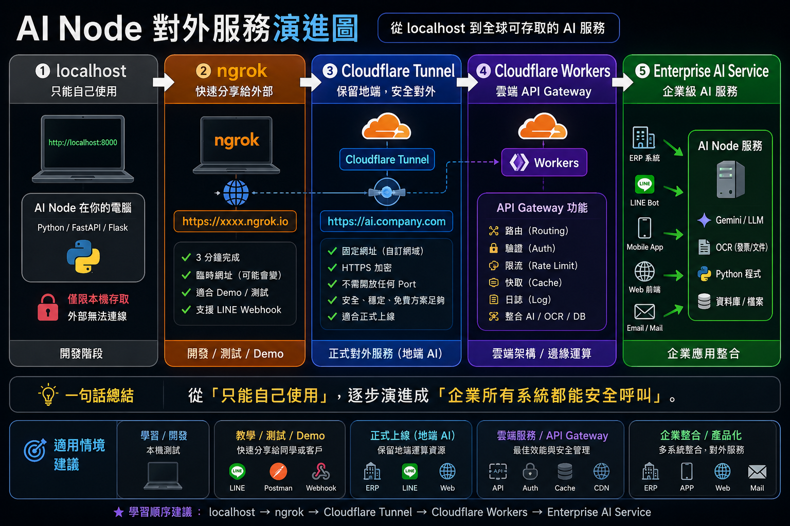

AI Node 連線與穿透實戰（Port 8888 單檔資源包模式）
單檔資源包實戰：一鍵啟動本機目錄檔案存取 API
本單元採用極簡「單檔資源包模式 (`app.py`)」！自動瀏覽當前程式所在目錄的檔案，
開啟於 Port 8888，搭配 `ngrok http 8888`，3 分鐘內讓手機或外部系統直接存取你電腦裡的發票與文件！
📦 Class 6 實體資源包下載 (`c6_ngrok_package.zip`)
內含完整單檔 app.py、一鍵雙點擊 .bat 批次檔、ngrok 執行檔與 AI/人類雙指引說明檔。
🤖 【學員專用】一鍵複製 Prompt 發送給你的 AI Agent (Cursor / Antigravity / Claude)
解壓資源包後，開啟專案直接將以下這段話貼給 AI Agent，即可全自動完成部署與穿透：
Agent，請幫我部署並啟動這個資料夾裡的 Class 6 AI Node 服務。 請按照以下步驟執行： 1. 讀取當前資料夾下的 README.md 說明文件。 2. 自動檢查並安裝缺少套件（例如 pip install fastapi uvicorn）。 3. 檢查系統是否有 ngrok 命令（若無或版本過舊請提示我或自動安裝）。 4. 啟動本機服務 (python app.py) 與連線通道 (ngrok http 127.0.0.1:8888)。 5. 成功後，請直接回報我可以使用的【對外 HTTPS 網址】與本機【http://localhost:8888】測試連結！
📂 實體解壓資料夾：c6_ngrok_package/
📄 給 AI Agent 讀取的說明檔：README.md
🌐 給人類學員閱讀的旗艦圖文指南：README.html (點擊在瀏覽器開啟)
c6_ngrok_package/
├── c6_ngrok_package.zip # 壓縮資源包實體檔案
├── README.md # 給 AI Agent 讀取的環境偵測與 SOP 指引檔
├── README.html # 給人類學員閱讀的雙模式圖文與 FAQ 指南
├── start.bat # 一鍵雙擊啟動 Python API 服務 (Port 8888)
├── start_ngrok.bat # 一鍵雙擊啟動 ngrok 穿透 (指定 127.0.0.1:8888)
├── app.py # 單檔兼具 API 與前端介面 (自動瀏覽當前目錄)
└── test_doc.txt # 測試文字檔
一、痛點破題：為什麼我們需要建立對外通道？
❌ 當你的本機服務只能跑在 Port 8888 localhost 時：
你在電腦啟動了單檔檔案存取 API：http://localhost:8888
❌ 隔壁同仁打你的 IP 被防火牆擋掉！
❌ 手機與外部網頁完全連不進來！
❌ ERP / LINE Webhook 無法呼叫本機服務！
👉 現在，我們將示範如何使用 `ngrok http 8888` 在 3 分鐘內完成外網安全穿透！
二、資源包實戰步驟： Port 8888 服務與 ngrok 一鍵對接
自動獲取 os.path.dirname(os.path.abspath(__file__)) 當前目錄檔案，並於 Port 8888 啟動：
import os, time
from fastapi import FastAPI
from fastapi.responses import HTMLResponse, JSONResponse
import uvicorn
app = FastAPI(title="Local File Browser Node")
CURRENT_DIR = os.path.dirname(os.path.abspath(__file__)) # 自動讀取當前程式所在目錄
@app.get("/api/files")
def list_files():
items = []
for name in os.listdir(CURRENT_DIR):
if name.startswith('.'): continue
filepath = os.path.join(CURRENT_DIR, name)
is_dir = os.path.isdir(filepath)
stat = os.stat(filepath)
items.append({
"name": name, "is_dir": is_dir,
"size_display": f"{round(stat.st_size/1024, 2)} KB" if not is_dir else "資料夾",
"modified": time.strftime("%Y-%m-%d %H:%M:%S", time.localtime(stat.st_mtime))
})
items.sort(key=lambda x: (not x["is_dir"], x["name"].lower()))
return {"status": "success", "current_dir": CURRENT_DIR, "items": items}
if __name__ == "__main__":
uvicorn.run("app:app", host="0.0.0.0", port=8888, reload=True)進入 `c6_ngrok_package` 資料夾開啟 PowerShell，輸入指令啟動：
=================================================================
🚀 啟動 Class 6 AI Node 本機檔案存取服務 ( Port 8888 )
📍 本機瀏覽網址: http://localhost:8888
🌐 開放外網連線請另開 Terminal 執行: ngrok http 8888
=================================================================
⚠️ 測試驗證：此時在瀏覽器存取 http://localhost:8888 即可瀏覽與預覽當前目錄下的所有檔案。
開啟另一個命令列視窗，輸入穿透指令：
ngrok by @inconshreveable
Session Status online
Account Falo Student (Plan: Free)
Version 3.5.0
Region Asia-Pacific (ap)
Web Interface http://127.0.0.1:4040
Forwarding https://c6-demo-8888.ngrok-free.app -> http://localhost:8888
把 ngrok 產生的 https://c6-demo-8888.ngrok-free.app 網址發送到你的手機：
手機立即順暢載入網頁，並能點擊預覽與讀取你電腦目錄下的 `app.py` 與 `test_doc.txt`！
三、ngrok 2026 官方方案比較與台灣實務經驗分析
根據 ngrok 2026 官方定價（ngrok Pricing）與台灣技術社群（如 iThome、ServBay）實務測試，整理 Free、Hobbyist 與 Pay-as-you-go 三大主流方案比較：
| 比較項目 | Free 免費版 | Hobbyist 個人版 | Pay-as-you-go 按量計費 |
|---|---|---|---|
| 月費 (2026) | $0 美金 | 約 $8 美金/月 (年約) | $10 美金 (月付) | 起始 $20 美金/月，超出按量計費 |
| 包含額度 Credit | 一次性 $5 美金額度 (僅 Free 時可用) | 每月 $10 美金額度 | 每月 $20 美金額度，其後按量 |
| 傳輸流量 (Data Out) | 每月上限 1GB | 5GB/月 (含在額度內，可加購) | 5GB 額度內，其後不限總量按量 |
| HTTP/S Requests | 約 20,000 次/月 | 約 100,000 次/月 | 100,000 次額度內，其後不限按量 |
| 同時在線 Endpoints | 最多 3 個 | 最多 3 個 | 無限制 (Unlimited) |
| HTTP/S 中介頁面 | 有 (需手動點擊 Visit 進入) | 無 (直接進站，適合正式 API) | 無 (同 Hobbyist) |
| 固定網域 / 自訂域名 | ❌ 每次重啟隨機變動 | ✅ 支援自訂固定子網域 | ✅ 支援 Wildcard 與自訂域名 |
💡 台灣技術文章與開發者實務痛點分析 (iThome / ServBay)
- 網址隨機變動：免費版每次重啟網址都改變（
xxxxx.ngrok-free.app），無法用於要求固定 Callback URL 的 Webhook、LINE Bot 或第三方金流。 - 連線並發限制：免費版連線並發較低，多人同時存取時容易觸發卡頓或連線被拒絕（`ERR_NGROK_8012`）。
- 中介體驗 (Interstitial Page)：免費版存取網頁時會跳出 ngrok 警告警告頁，訪客需按 Visit 才能進站。
- Dashboard 紀錄保留短：免費版流量紀錄僅保留數小時，對於長時間除錯或 AI Audit 紀錄追蹤較不方便。
🎯 天心 Class 6 專屬方案選擇決策準則
- 🎓 教學 / 練習 / 短期 PoC 實戰：選 Free 免費版 即可完成 Class 6 課堂展示與手機存取測試。
- 🔗 長期 Webhook / LINE Bot / 專屬客服：建議升級 Hobbyist ($8-10/月) 取得固定自訂網域與去除中介頁。
- 🏢 企業級多廠區 Ingress / 工廠 MES 對接：建議採用 Cloudflare Tunnel (免費且可綁企業域名) 或 ngrok Pay-as-you-go。
四、ngrok (練兵) vs. Cloudflare Tunnel (正式) 評估矩陣

圖：AI Node 對外服務演進 5 大階段 (localhost ➔ ngrok ➔ Cloudflare Tunnel ➔ Workers ➔ Enterprise AI)
🌐 Cloudflare 關鍵優勢：只改 Name Server (NS) 即可完成部署！
使用 Cloudflare 最強大的地方在於：完全不用動現有主機或 IP！只需要將 DNS 代管指向 Cloudflare：
2️⃣ 變更 NS 伺服器：在 GoDaddy 或國內服務商後台，將 DNS Name Server 改填 Cloudflare 指派的兩組 NS。
3️⃣ 啟用 Cloudflare Tunnel：地端執行
cloudflared，綁定專屬子域名（如 ai.yourdomain.com），享受免費 HTTPS 與 DDoS 全球防禦！
🟢 Free 免費版 ($0/月)
完全就夠用！ 免費提供 SSL 憑證、CDN 全球加速、DDoS 巨量防禦與無限流量的 Cloudflare Tunnel 穿透。
🔵 USD $5 / 月 (Workers Paid)
CP 值爆棚，更好用！ 每月包含 1,000 萬次 API 請求，50ms CPU 時間可用於邊緣 AI 路由、身分驗證與 LINE Webhook 轉發。
| Cloudflare 服務生態規格 | Free 免費版 ($0/月) | USD $5 / 月 (Workers Paid 爆棚版) |
|---|---|---|
| Workers API 請求數 | 100,000 次 / 天 (約 300 萬次/月) | 10,000,000 次 / 月 (超大 basic allowance) |
| Workers CPU 執行時間 | 10 ms / 請求 | 50 ms / 請求 (可跑邊緣 AI 路由/驗證) |
| D1 SQL 雲端資料庫 | 500 萬行讀取/天 | 10 萬行寫入/天 | 250 億行讀取/月 | 5,000 萬行寫入/月 |
| R2 物件儲存 (發票/圖檔) | 10 GB 儲存 | 零對外流量費 | 10 GB 儲存 | 零對外流量費 (Zero Egress) |
| KV 鍵值快取 (Token/設定) | 10 萬次讀取/天 | 1,000 次寫入/天 | 1,000 萬次讀取/月 | 100 萬次寫入/月 |
| Vectorize 向量庫 & AI | 3,000 萬維度儲存/月 | 1萬 Neurons/天 | 1,000 萬次向量查詢/月 | 支援邊緣推論 |
| Cloudflare Access 門禁 | 免費 50 位使用者 SSO 驗證 | 免費 50 位使用者 SSO 驗證 |
🛡️ Cloudflare 企業資安防護提升版 (Security Suite & Zero Trust)
當地端 AI Node 對接企業 ERP、財務或內控數據時，推薦搭配 Cloudflare 企業防禦套件：
- 🔐 Cloudflare Access (零信任門禁)：免費版包含 50 人額度，強迫過濾 SSO 身份驗證 (Google/Azure AD)，未授權者連連線請求都無法抵達地端。
- 🛡️ WAF 託管規則集 (Managed Rulesets)：自動抵禦 SQL 注入、XSS、Log4j 等零日漏洞攻擊。
- 🤖 Super Bot Fight Mode：自動辨識惡意機器人與爬蟲，防止地端 GPU 被爬蟲流量擠爆。
- ⏱️ Rate Limiting (頻率限制)：精準控管單位時間內 API 呼叫次數，防範 DDoS 與爆破。
💻 靈巧變相運用：Windows 365 雲端開發主機與小流量 24/7 AI 節點
解決方案架構師不可不知的變相神招：將資源包 `c6_ngrok_package` 或 `cloudflared` 部署於 Windows 365 (Cloud PC)：
- 💻 雲端開發主機 (Dev Machine) 兩大絕殺優勢：
- ⏰ 全天候待機 (24/7 Cloud Readiness)：進度跨裝置原封不動保留（公司用電腦、回家用 iPad/Mac），背景 OCR 批次與測試筆電關機也能 24H 默默跑完。
- 🛡️ 極高企業資安堡壘 (Stealth Tunnel Security)：透過主動外連 Tunnel，Win365 不需要開放任何對內 Port 號 (Zero Inbound Ports)，外網無法直接掃描或攻擊主機，其他惡意流量全被 Cloudflare 全球邊緣防禦牆完全阻擋！加上「資料不落地」與原廠 MFA / Defender，成為保護極高的雲端 VPS。
- 🟢 小流量 PoC / 輕量營運 (Win365 + Tunnel)：微軟未明確禁止背景服務，經實測，每天數百-數千次 ERP Webhook 拋轉可完美 24/7 穩定運行。
- 🔵 大流量正式營運 (正規 VPS / 雲端 VM)：若為巨量高併發 API，建議選擇專用 Windows/Linux 伺服器 (AWS/GCP/國內VPS) 獲得獨佔算力保障。
| 評估項目 | ngrok (開發神器 ⭐⭐) | Cloudflare Tunnel (企業正式 ⭐⭐⭐⭐⭐) | Solution Architect 評語 |
|---|---|---|---|
| 學習難易度 | ⭐⭐⭐⭐⭐ (極簡單) | ⭐⭐⭐ (需設定 DNS) | ngrok 適合資源包模式快速練兵示範 |
| 建置速度 | ⭐⭐⭐⭐⭐ (3分鐘完成) | ⭐⭐⭐⭐ (約 10 分鐘) | ngrok http 8888 隨插即用，展示超快 |
| Demo / 測試體驗 | ⭐⭐⭐⭐⭐ (極佳) | ⭐⭐⭐ | LINE Webhook 與 Demo 首選 ngrok |
| 正式生產環境 (Production) | ⭐ (不建議) | ⭐⭐⭐⭐⭐ (企業標準) | Cloudflare Tunnel 支援正式 Production |
| 固定自訂網址 (Custom Domain) | 需付費訂閱方案 | ✅ 完全免費支援 | Tunnel 可綁定企業專屬域名 |
| 資安與防火牆防護 | 普通 | 高 (Cloudflare WAF 防護) | Tunnel 無須開啟 router Port 號 |
Cloudflare 超強 Serverless 後端生態系 (D1 / R2 / KV)
Cloudflare 不只用來做對外連線與 Tunnel 穿透！在後續進階課程中，我們將帶領學員直接撰寫 Cloudflare Workers 邊緣後端程式，並整合其強大的全套無伺服器雲端服務：
基於 SQLite 打造的超低延遲邊緣 SQL 資料庫，完美儲存 AI Node 稽核日誌與結構化帳務數據。
大容量檔案與發票 PDF/圖檔儲存庫，主打零對外流量費 (Zero Egress Fees)，節省巨量雲端開銷。
全球毫秒級讀取快取、使用者 Token 驗證與動態系統設定開關。
搭配 Cloudflare Workers AI，實現全 Serverless 的知識庫 RAG 與邊緣 LLM 檢索應用！
Cloudflare Tunnel 教你建立企業 AI 服務！」
執行單檔 app.py (Port 8888)，配合 ngrok http 8888 在 3 分鐘內跨越外網障礙！